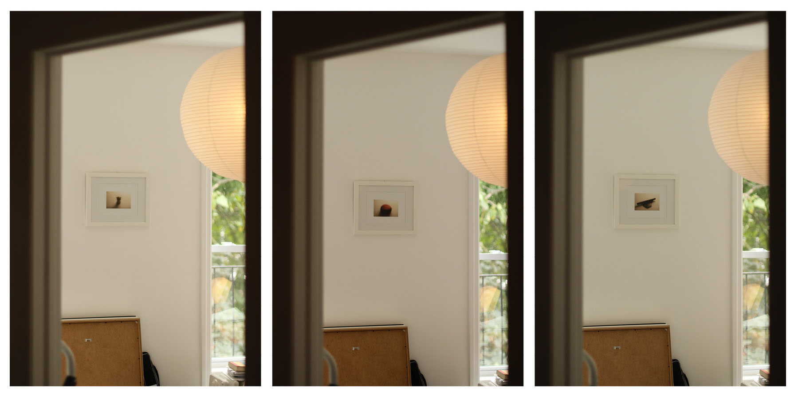

10.11 Embody Exercises
The following Embody Exercises were intended as a quick research through making. There is no objective, save for having no objective.
Up until this point, the inquries into our topics have been informed by research and findings on our subject, but this will be the first
opportunity for us to inform that research by either interacting with or producing tangible aspects.
Embody Exercise 1
The first of these exercises looks into the legibility of an object. As the objects become blurred, do they ellicit more responses from us or less? There's an aspect of memory associated with this exploration as well. When we're remembering something and find ourselves not having full recollection, we seek harder, thus think more about that one particular memory.
Embody Exercise 2/3
The second and third explorations is around the act of transformation. For the sake of time, these were performed optically as opposed to physically. On the left are optical transformations intended to give new form to the object in 3D, and on the right, is approaching that same transformation, but flattening the object into a 2D scan. While it's hard to judge its effectiveness outright, there's certainly something interesting by portraying optical transformations. In a sense, the objects become actors, a template for replication. This makes me think of Warhol's canned soups, celebrating the endless production of a commonly found object as it finds its way into our collective memory.
Embody Exercise 4/5
The fourth and the fifth exercises are about recontextualization. On the left, the object is placed in a reflective box, replicating it infinitely. On the right, the same object is found within the same mirrored box, but against a backdrop of a period room set. Here, in its representation, the object's personification takes center stage as it tries to find its place in the overall setting.


Embody Exercise 6
The last of the exercises seeks to grant an audience to the object. This goes hand in hand with the previous exercise where the object is recontextualized. By observing the object, photographing it, and then framing it, we can possibly see this as an act of elevation. It's easy to notice something once someone else has already given it a value.
